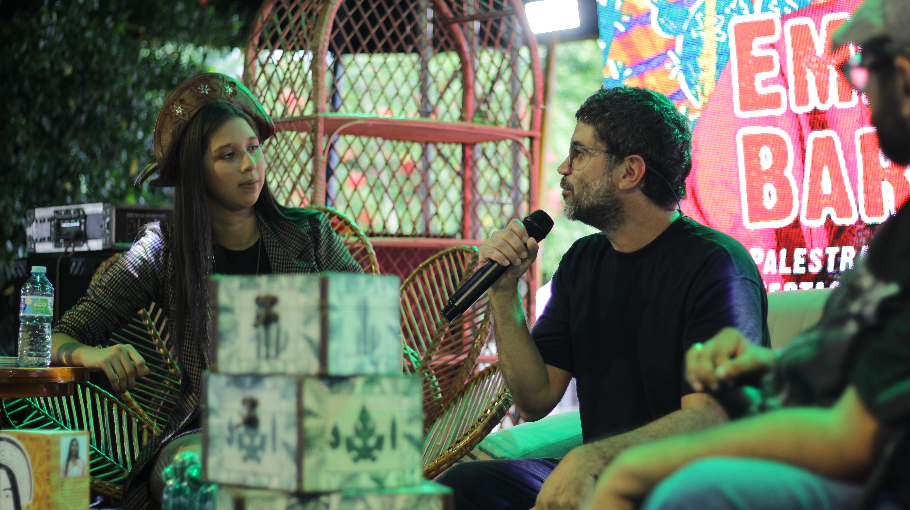

Extrato da proposta
Documento base para compreender a estrutura da ação e sua formalização institucional.
Abrir PDFO Circuito Formativo organiza processos de aprendizagem para artistas, produtores, coletivos e agentes culturais. É um projeto pensado para transformar interesse em prática, fortalecer autonomia e ampliar repertórios no sertão.

A estética desta página busca refletir o clima do aprendizado em movimento: tons quentes, verdes de crescimento e uma sensação de laboratório criativo.
O Circuito Formativo surge da percepção de que a cena cultural precisa de continuidade, ferramentas e espaços de aprendizagem para se fortalecer. Nem sempre talento e vontade bastam: é preciso acesso a processos que ajudem artistas e agentes culturais a estruturar melhor suas ideias, sua produção e sua presença no território.
Com oficinas, rodas de conversa, práticas compartilhadas e conteúdos voltados à música, ao audiovisual e à gestão, o projeto atua como um campo de desenvolvimento. Ele ajuda participantes a organizar propostas, ampliar repertórios e transformar experiências em ação cultural mais consistente.
Ao mesmo tempo, o Circuito Formativo cria vínculos. A aprendizagem acontece em grupo, e isso favorece o surgimento de redes, colaborações e novos desdobramentos para além de cada oficina ou encontro.
“Formar é criar condições para que a cultura local tenha mais permanência, mais autonomia e mais capacidade de inventar seu próprio futuro.”
O circuito parte da observação do território e das necessidades reais de artistas, grupos e agentes culturais.
As formações combinam conceitos, exemplos e exercícios para transformar repertório em ação concreta.
O ambiente coletivo favorece cooperação, partilha de experiências e surgimento de novas conexões culturais.
O conhecimento circula para além da oficina, impactando projetos, eventos, narrativas e formas de organização local.
Participantes ganham referências e ferramentas para estruturar melhor suas ações e projetos culturais.
O projeto cria pontes entre pessoas, linguagens e experiências que antes atuavam de forma dispersa.
A formação fortalece uma base cultural capaz de gerar novos eventos, coletivos e iniciativas no território.
.jpg)
.jpg)


.jpg)
Os vídeos podem ser usados para ampliar futuramente esta página com aulas, bastidores e relatos de participantes.
Documento base para compreender a estrutura da ação e sua formalização institucional.
Abrir PDFRegistro importante para leitura do valor cultural e do escopo do processo formativo.
Ler parecerDocumento que complementa a memória administrativa e a transparência do projeto.
Consultar termoEsta página pode receber, no futuro, calendário de oficinas, depoimentos de participantes e materiais de apoio para download.
Sugerir parceria →Volte para a página de projetos e conheça outras frentes da associação que dialogam com música e audiovisual.
Ver todos os projetos →